A cidade de Fuchsia é uma cidade histórica. Você pode acessar a Safari Zone regional e preencher sua Pokédex. Koga é o líder de ginásio da cidade de Fuchsia, e ele usa pokémon do tipo Venenoso. Seu ginásio contém paredes invisíveis que obrigam o jogador a ir ao redor, enquanto luta com treinadores.
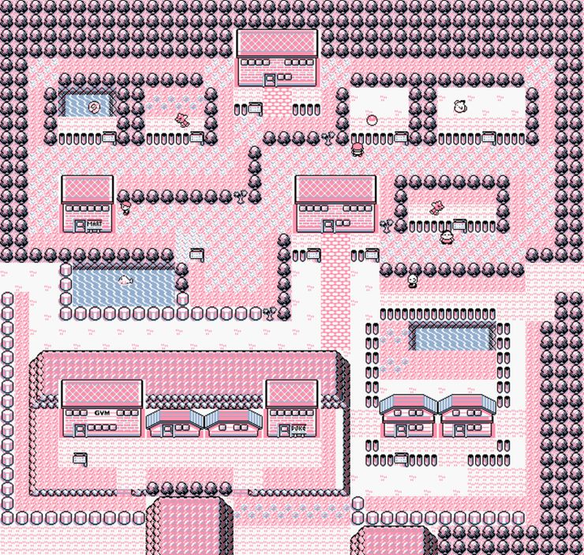A cidade de Celadon está localizada no centro da região de Kanto e é a cidade mais populosa de Kanto. A principal atração de Celadon é gastar dinheiro, pois é o lar de várias lojas de departamentos. Erika é a líder de ginásio em Celadon, que utiliza principalmente pokémon do tipo Grama.
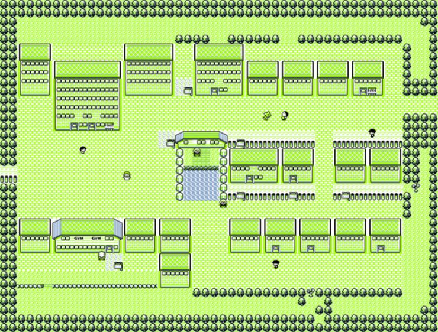Pewter se destaca como a cidade onde as coisas ficam sérias. O primeiro ginásio do jogo está aqui. Brock é o líder de ginásio da cidade de Pewter, especializado em pokémon do tipo Pedra. Fora do ginásio temos o museu onde os jogadores podem examinar antigos fósseis pokémon.
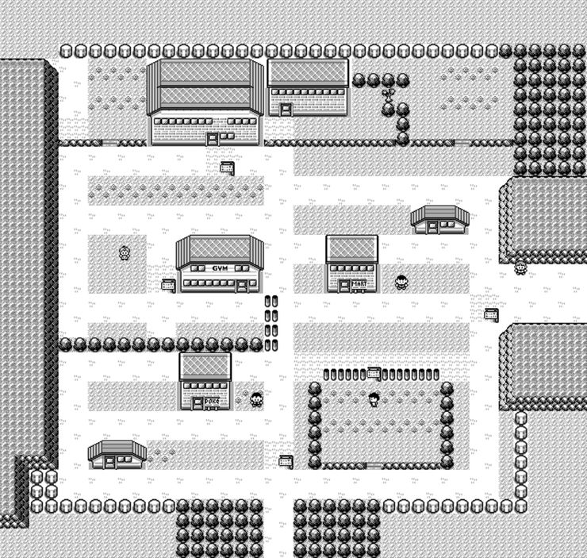É a localização da líder de ginásio Misty. Ela é um treinadora de pokémon do tipo Água. Essa cidade renderá aos jogadores algumas visitas para realmente explorar o que ela tem a oferecer. Ganhar o vale-bicicleta em Vermilion, por exemplo, vai te dar uma bicicleta na Bike Shop. Além disso, retornar após a Liga lhe dá a chance de explorar a Cerulean Cave, lar do lendário Mewtwo.
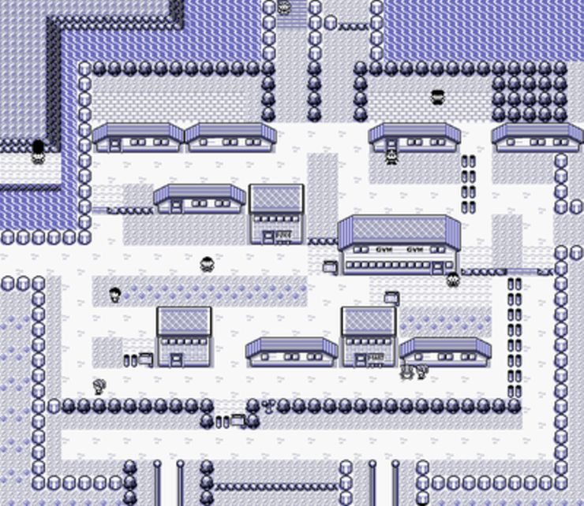Os jogadores são direcionados aqui para entregar um pacote ao Professor Oak, mas fora isso não há muito mais o que fazer ainda. Retorne depois de ganhar as sete primeiras insígnias de ginásio para o oitavo líder ser revelado, Giovanni. Somente nesse ponto o seu ginásio estará disponível para ser desafiado. Ele é especializado no tipo Terrestre.
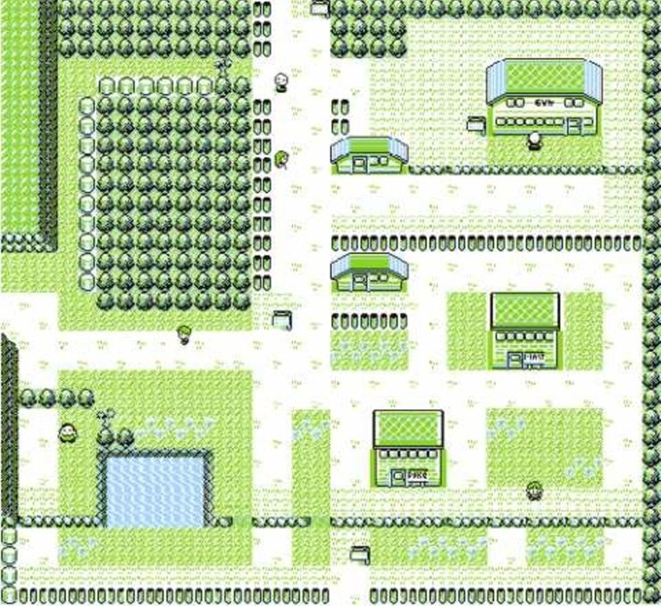É a única cidade de Kanto que possui um porto, que abriga um navio luxuoso. Considere visitar o Presidente do Pokémon Fanclub que lhe dará um vale-bicicleta apenas para ouvi-lo falar sobre seus pokémon favoritos. Uma vez feito isso, o líder do ginásio do Vermilion, Lt. Surge, estará o esperando com seus pokémon do tipo Elétrico.
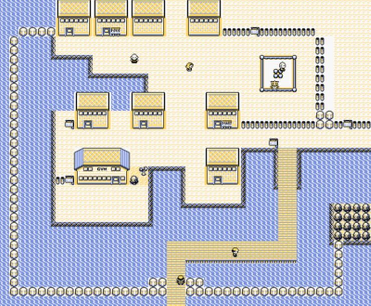O fator assustador é o que realmente torna Lavander memorável. É o lar da Pokémon Tower, um cemitério interno de sete andares cheio de túmulos de pokémon falecidos. Considere ajudar os moradores, descobrindo o mistério de um fantasma em particular que está assombrando a Pokémon Tower.
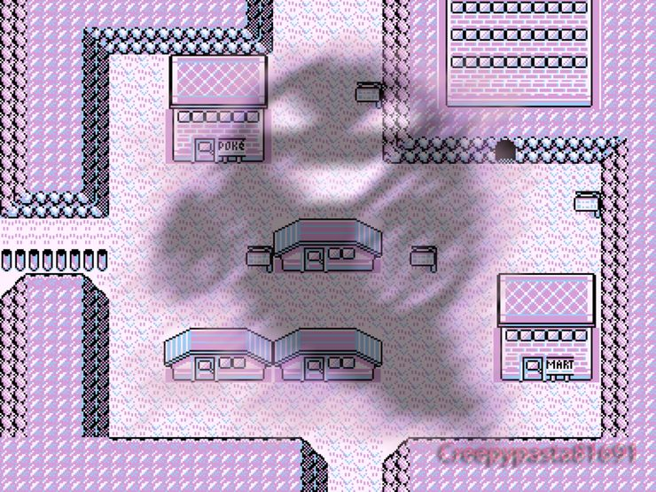A Cinnabar Island é o lar de um laboratório e uma velha mansão abandonada. Você pode ir ao laboratório para trocar alguns Pokémon e identificar os fósseis encontrados na cidade de Pewter e Mt. Moon. O ginásio está inicialmente bloqueado. Depois de recuperar a chave da Pokémon Mansion, o jogador pode desafiar o líder de ginásio Blaine, um treinador pokémon do tipo Fogo.
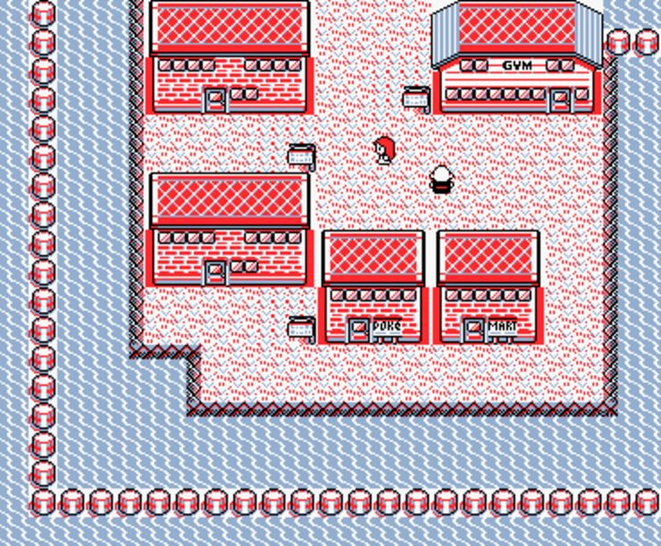É a maior cidade da região de Kanto e não surpreende que haja uma série de lugares interessantes para visitar. É o lar da sede da Silph Co., do Fighting Dojo, da casa do Mr. Psychic, da casa Copycat, e, claro, do ginásio de Saffron, onde os jogadores se encontrarão contra Sabrina e sua equipe do tipo Psíquico.
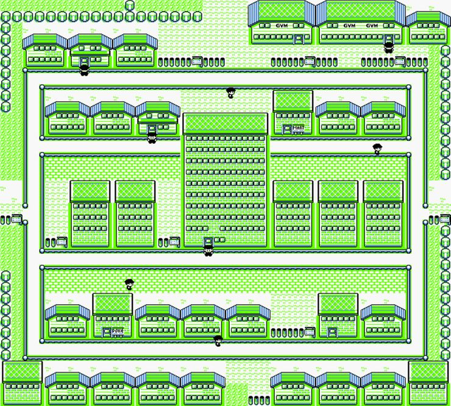É a cidade onde tudo começa. Você mora com sua mãe e sai em sua jornada após receber o seu pokémon inicial do Professor Oak, juntamente com sua Pokédex. É uma cidade pequena e pacífica.
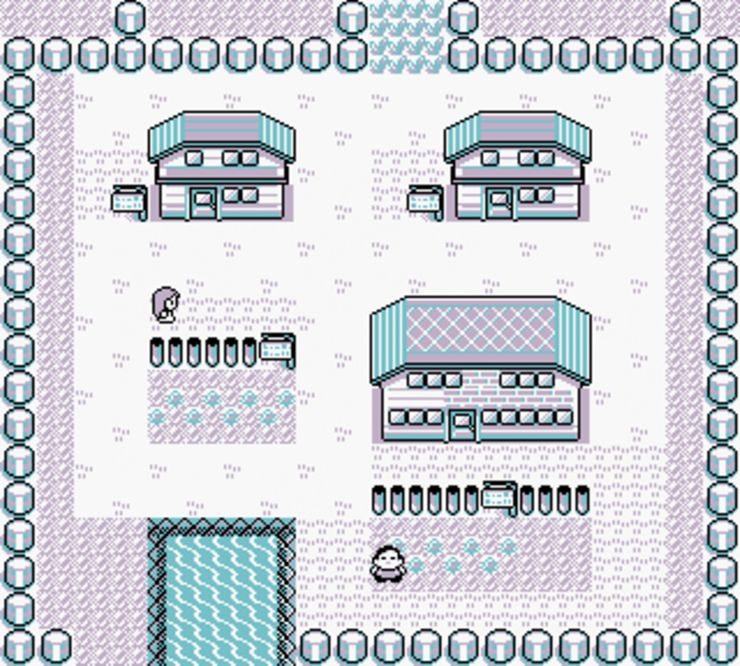Para esclarecer, o Indigo Plateau não é uma cidade, mas merece seu lugar destacado no mapa. Depois de passar pela Victory Road, uma jornada que testará não só as proezas de combate dos jogadores, mas também suas habilidades de aventura, o Indigo Plateau recebe o desafio mais intenso que Kanto tem a oferecer: a Elite Four, os treinadores mais fortes da região, e o Campeão.
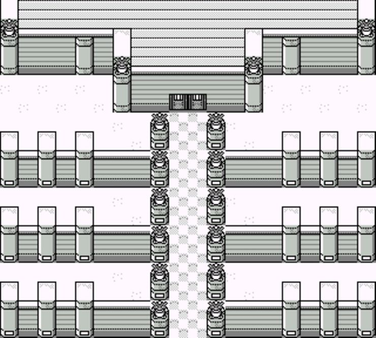